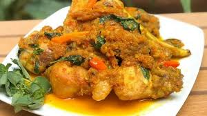
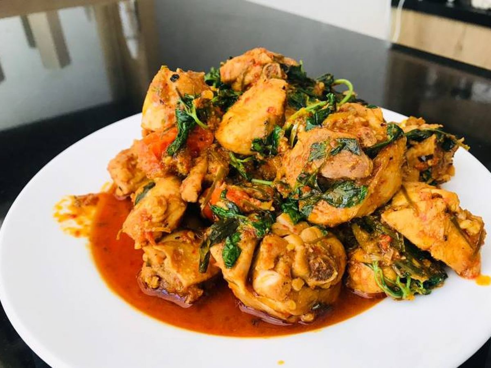
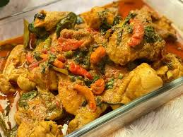

Ayam Woku adalah hidangan ayam khas Manado yang dimasak dengan bumbu rempah yang kaya, menghasilkan rasa pedas, gurih yang lezat.
Cocok disantap dengan nasi hangat.
Bahan Bahan:
- Ayam (potong sesuai selera)
- Daun kemangi
- Daun pandan
- Serai (geprek)
- Daun jeruk
- Cabai merah dan cabai rawit
- Tomat
- Bawang merah dan bawang putih
- Kunyit
- Jahe
- Garam, gula, dan penyedap rasa